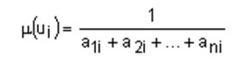

1 - якщо відсутня перевага елемента ui над uj;
3 - якщо існує слабка перевага ui над uj;
5 - якщо існує істотна перевага ui над uj;
7 - якщо існує явна перевага ui над uj;
9 - якщо існує абсолютна перевага над;
2,4,6,8 - проміжні оцінки переваг.
На основі цих властивостей обчислюються всі елементи матриці парних порівнянь, якщо є обчислені попередньо (n-1) недіагональних елементів. Наприклад, якщо відомо k-тий нижній рядок матриці , тобто елементи akj , к,j=1..n ‚ то елементи к+1 – го рядка , тобто aij визначаються формулою:
Функції належності нечіткої множини обчислюються за формулою:
